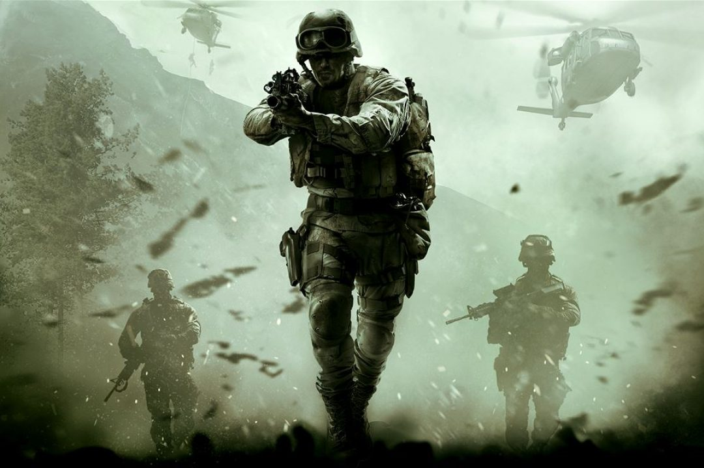

PENSAR, ACTUAR EN EQUIPO, NUNCA RETROCEDER
Call of Duty es una serie de videojuegos de disparos en primera persona , de estilo bélico, creada por Ben Chichoski, desarrollada principal e inicialmente por Infinity Ward, y distribuida por Activision. La franquicia comenzó para computadora personal y posteriormente fue expandiéndose hacia videoconsolas de sexta y séptima generación, tanto de sobremesa como portátiles, llegando así, a lanzar varios juegos derivados de forma paulatina con la serie principal. La serie inicialmente se ambientaba en la Segunda Guerra Mundial, relatando personajes y combates acaecidos durante dicho conflicto bélico. Esto fue cambiando hasta la actualidad, donde los argumentos suceden en ambientes contemporáneos y ficticios, como se puede ver en Call of Duty: Black Ops, en la Guerra Fría, como se ve en Call of Duty 4: Modern Warfare, Call of Duty: Modern Warfare 2, y Call of Duty: Modern Warfare 3 en la Tercera Guerra Mundial, y en los futuros tecnológicos en Call of Duty: Black Ops 2, Call of Duty: Advanced Warfare, Call of Duty: Black Ops 3 y Call of Duty: Infinite Warfare